Zügelkraftmesser
In der Reiterei wird der Zügel nicht nur überbewertet sondern auch inflationär genutzt. Die Kräfte die dort aufgewendet werden stehen in keinem Verhältnis zu dem Umstand, daß sich da ein Stück Metall im Pferdemaul an der anderen Seite befindet. Wie schön wäre es, wenn man die Kraft am Zügel live messen und vielleicht in einem Video des Rittes visulisieren könnte.
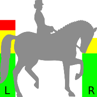
Foto(love)story
Man braucht dazu im Grunde nur gängige Hardware. Ein Arduino kann als Computer genutzt werden (Duemilanove ca 20€, Nachbauten 3€), die Übertragung der Daten kann per Bluetooth erfolgen, das typischer weise 10, bzw sogar 100 Meter überbrücken kann. Es gibt fertige Komponenten für den Arduino (HC-06 ca 3€). Hier eins der ersten Bilder des Arduino mit der Bluetooth-Komponente (und einem Lautsprecher zu Testzwecken):
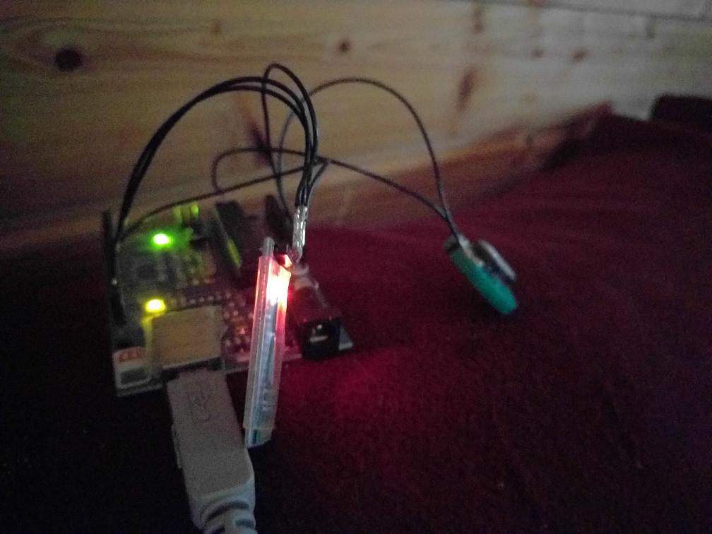
Die Sensoren findet man in jeder digitalen Personenwaage (sogar gleich 4 davon) aus Kleinanzeigen oder vom Sperrmüll (meine kamen vom Claus, Danke!) oder kann sie auch neu kaufen (ca 2x 8€). Zwei Verstärker (kleinere, grüne Platine im Bild) sind nötig (HX-711, ca 2x 2€), um die beiden Sensoren auszulesen. Ein Testaufbau nur mit einem Verstärker und zwei Sensoren in Reihe (in der Personenwaage sind alle vier Sensoren auf komplizierte Art verschaltet um unterschiedliche Belastungen auszugleichen). Alles löte ich auf ein "Shield" (je nach Lieferant 1-10€), dass einfach auf den Arduino gesteckt wird. Der erste Aufbau mit einem Verstärker und zwei Sensoren beweist, dass die Sensoren auf dem Müll nicht kaputt gehen und ich die Sache so grob verstanden habe:
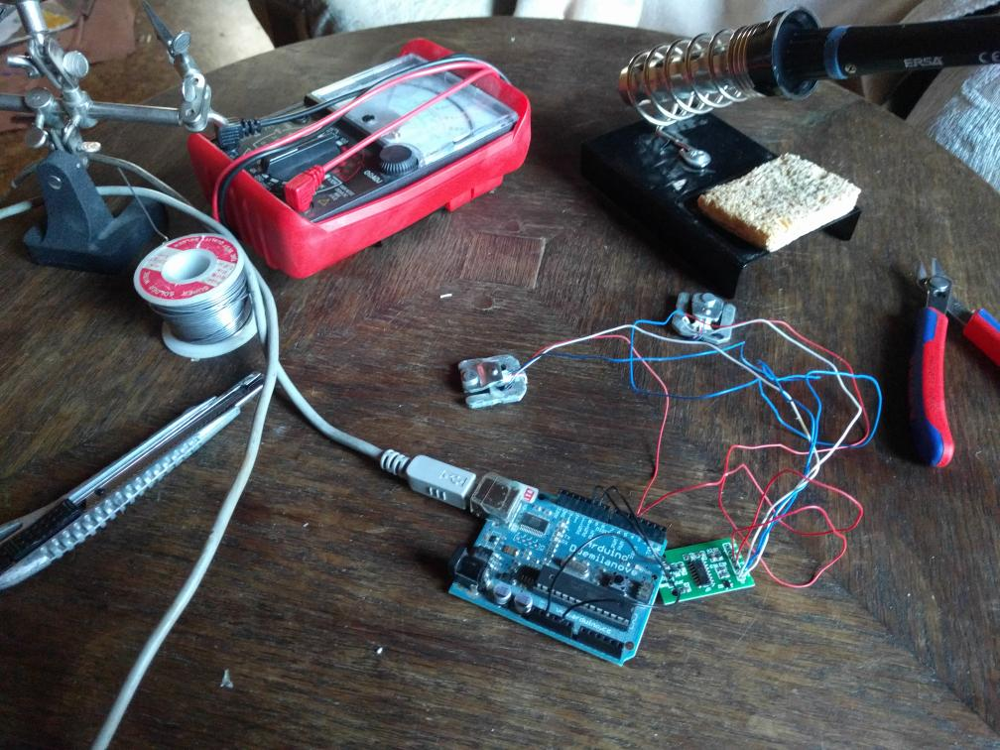
Direkt aus China kommen die Teile, allerdings mit 2 bis 3 Wochen Lieferzeit. Hier das Shield und die Bluetooth-Komponente und einige Pfostenstecker (die ich allerdings nicht verwende, ich nehme eine Pfostenleiste, da ich auf mein Shield kein weiteres stecken will und weil ich damit Abstand zum Arduino bekomme, der noch einen ur-alt USB-Anschluss enthält, der so hoch ist, dass er an die Lötstellen auf einem Shield kommt und Kurzschlüsse verursacht):

Die Komponenten werden auf einer Platine fest verlötet um gegen die Rüttelei beim Reiten gefeit zu sein:
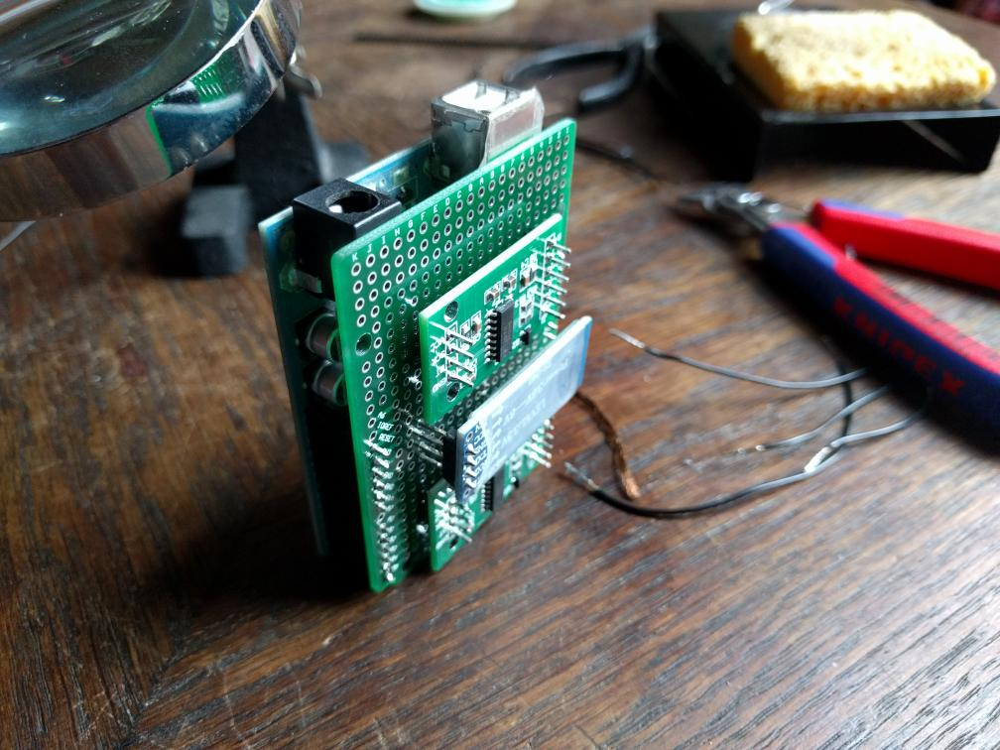
Alles verdrahtet: Der vollständige, funktionierende Aufbau. Es fehlt nur noch die Verlängerung bis zur Trense und die schützenden Gehäuse:

Die Sensoren werden mittels Steckverbindungen (Klinkenbuchsen ca 2x 1€, vorgefertigtes Kabel mit Stecker ca 2x 2€) unabhängig angeschlossen:
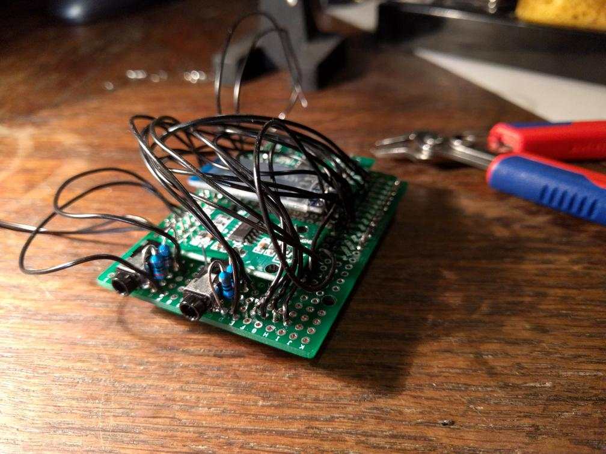
Um den Sensor, der für Druck ausgelegt ist, wird ein Band gelegt, um den Zug am Zügel zu messen. Das Band drückt den Sensor auf die gleiche Weise bei Zug zusammen, als ob der Sensor (wie in der Waage) durch Gewicht zusammengedrückt wird:
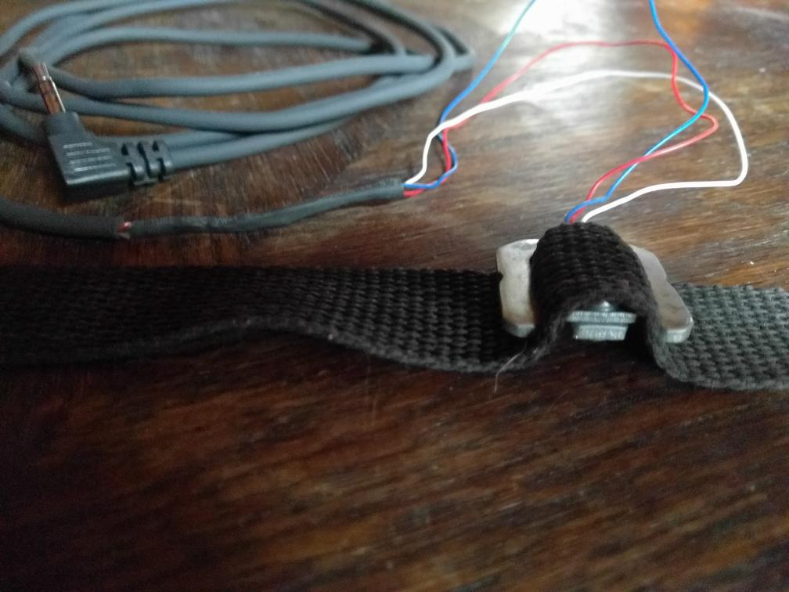
Beschläge hoher Qualität sorgen für die Sicherheit, daß sie am Zügel nicht abreissen:
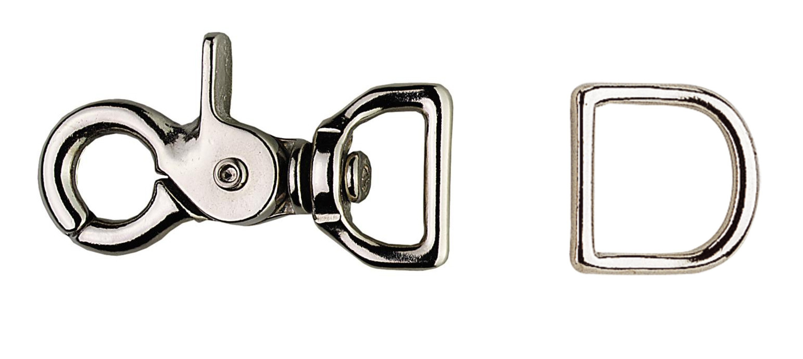
Leider war der Hersteller nicht interessiert, so kleine Mengen (zwei) zu verkaufen. Darum musste ich zu Massenware wechseln, die zudem etwas gross und schwer ist.
Der Übergangswiderstand der Klinkgenstecker ist zu gross und variabel und wird beim Bewegen der Stecker mitgemessen. Mühselig muß ich sie wieder entfernen und die Platine vom Lötzinn säubern. Und da mit den Klinkensteckern keine Messung möglich war, bin ich unsicher ob meine Überlegung lieber Widerstände mit hoher Genauigkeit dafür aber etwas anderem Wert (900 statt 880 Ohm) zu nehmen, überhaupt funktioniert.
Die Lust weiterzumachen verliess mich ersteinmal für ein paar Wochen, bis ich ein paar Kindern beim Löten zuschaute.
Das gab den richtigen Anstoss und ich lötete die Kabel fest an das Shield:

Langsam wird es ziemlich friemelig:

Am schlimmsten finde ich die Brücken, die man auf dem Experimentierboard löten muss. Eine schöne Lösung dafür habe ich noch nicht gefunden. Im Internet habe ich sogar Bilder gesehen, wo die Lötstellen noch schlimmer aussahen als bei mir:

Nach Fertigstellung aller Lötstellen steht die Nagelprobe: Geht es überhaupt? Wenn nicht, heisst es, alle neuen Lötstellen nachzulöten, was unschön ist, weil die Brücken alles andere als Stabil sind. Im flüssigen Lötzinn haftet die Brücke lieber an der Lötspitze als der Stelle, wo sie hingehört.
Aber es funktioniert! Auf Anhieb! Meine Begeisterung kennt keine Grenzen.
Dann geht es an die Zügelführung, links die Riemen mit den Befestigungen und den Sensoren in der Mitte:
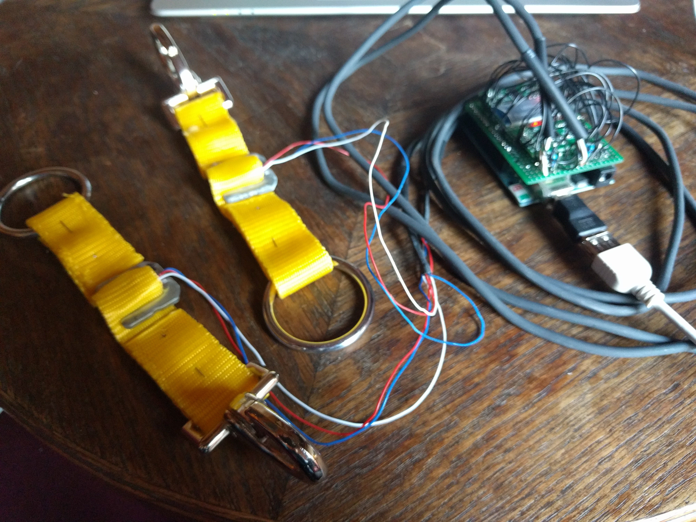
Das Batteriepack für den mobilen Einsatz:

Nun noch die Riemen nähen:

Dann die Sensoren festnähen und Lederummantelung anbringen um die Komponenten vor der rauen Welt der Reiterei zu schützen:

Ein alter Martingalriemen erlaubt das Umhängen des Arduino:
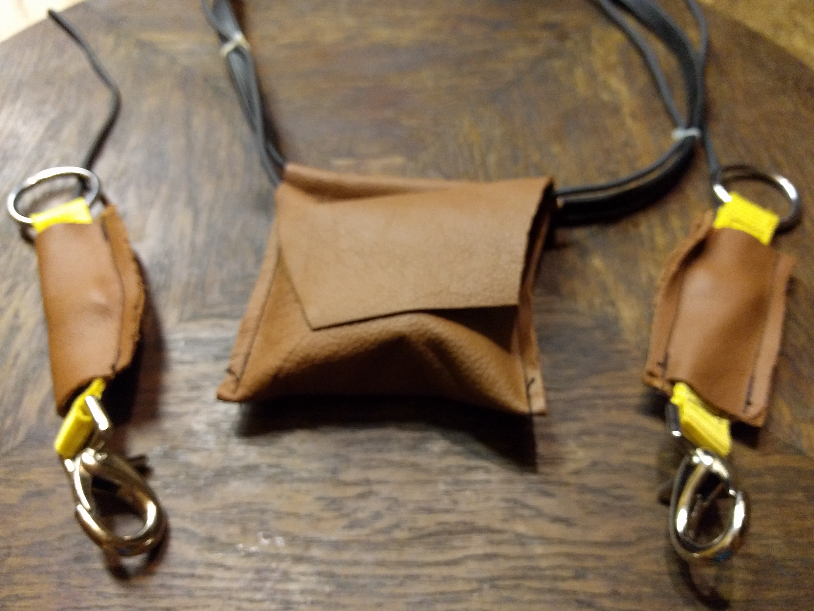
Und schliesslich muss alles tariert und skaliert werden:
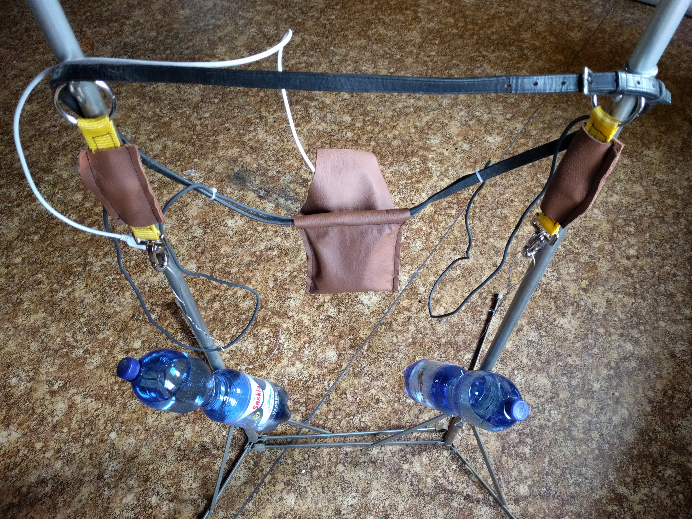
Die zugrundeliegende Technik
Kraftsensoren
Die Sensoren beruhen auf einer sogenannten Wheatstone-Bridge, sie erlaubt das Messen und dann Digitalisieren minimaler Änderungen von Widerständen. Dazu werden 3 konstante (S1-3) und ein variabler (S4) Widerstand in einer Raute zusammengeschaltet. Die minimale Änderung des einen Wiederstands ruft eine Änderung des Potentials zwischen den linken und rechten Polen aus, eine Spannung, die sich verstärken und dann digitalisieren lässt:

Der Verstärker ist ein HX-711, er braucht auf der Arduino-Seite PWM-fähige Eingänge:

Die Sensoren kommen mit drei Anschlüssen und enthalten nur 2 der 4 nötigen Widerstände:

Bluetooth
Die Bluetooth-Lösung ist etwas... gewalttätig. Wenn man sich klar macht, welche Prozessorleistung nötig ist, um Bluetooth umzusetzen und was ein Arduino vermag, passt beides im Grunde nicht zusammen. Da heute auch performante Prozessoren billig und stromsparend zu haben sind, gibt es für den Arduino Erweiterungen, die die gesamte Bluetooth-Thematik erledigen. Vermutlich steckt auf der Platine ein ARM Prozessor (ein kleiner Bruder dessen, was wie in unseren Smartphones haben) neben dem primitiven Prozessor des Arduino. Die Verdrahtung ist also vergleichsweise einfach, Masse, Power, In und Out (4 Kabel):

Temperatur
Der Arduino ist mit Bluetooth und zwei Kraftsensoren ausgereizt. Er besitzt nur 6 PWM fähige Pins (wenn man den USB-Anschluss zum Flashen & Debuggen nicht verlieren will) und jeweils zwei werden pro Komponente benötigt. Nur für einfache D/A Wandlung sind weitere Pins verfügbar.
Es ist also Platz, zB auch die Temperatur zu messen (da es so simpel ist), hierfür gibt es Bauteile (LM-35, weniger als 1€), die dies recht einfach mit dem Arduino vermögen:
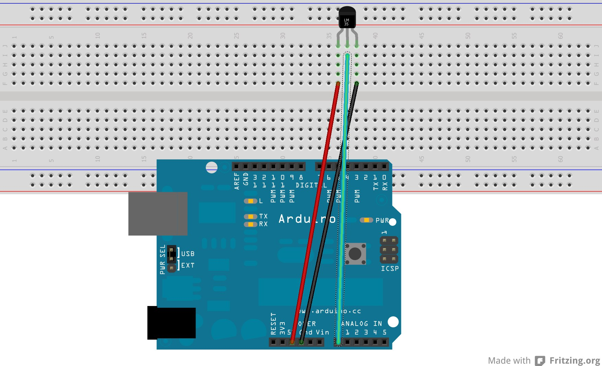
Die Software
Schliesslich müssen Programme entwickelt werden. Ein kleines Programm auf dem Arduino liest die Daten von den Sensoren und übergibt sie an die Komponente die diese per Bluetooth überträgt. Da Smartphones verfügbar und mobil sind, eignen sie sich am besten, um die Daten empfangen. Die beste Möglichkeit ist eine Android-App, die Entwicklung für IOS ist zu aufwendig und andere Systeme zu wenig verbreitet.
Arduino-Programm
Das Programm für den Arduino ist übersichtlich. Von Debug-Statements und Kommentaren befreit sind es nur ein paar Zeilen:
#include <HX711.h>
#include <SoftwareSerial.h>
SoftwareSerial BT(11, 3);
HX711 LoadCell_1;
HX711 LoadCell_2;
static const unsigned long min_wait = 3L;
static const unsigned long frequency = 5L;
void setup() {
BT.begin(9600);
LoadCell_1.begin(9, 10);
LoadCell_1.set_scale(2280.f);
LoadCell_1.tare();
LoadCell_2.begin(5, 6);
LoadCell_2.set_scale(2280.f);
LoadCell_2.tare();
BT.println();
BT.println("tick;tock;left;right");
}
void loop() {
unsigned long tick = millis();
delay(1000 / frequency / 2);
digitalWrite(13, HIGH);
float current_millis=0;
float tock=millis();
float left_force=0;
float right_force=0;
current_millis = tick / 1000.0;
left_force = LoadCell_1.get_units();
right_force = LoadCell_2.get_units();
tock = (millis() - tock) / 1000.0;
BT.print(current_millis, 3);
BT.print(";");
BT.print(tock, 3);
BT.print(";");
BT.print(left_force, 1);
BT.print(";");
BT.print(right_force, 1);
BT.println();
digitalWrite(13, LOW);
tick += 1000L / frequency - min_wait;
while (millis() < tick) {
delay(min_wait);
}
}
Android-App
Die Android-App kann sich bereits zum Mess-Adapter verbinden und empfängt die Werte.
Sie zeigt die beiden Zügelkräfte in grün/gelb/roten Balken an (wie das Logo der App, siehe oben).
Die Werte werden mit Zeitpunkten aufgezeichnet. Nach dem Ritt können die
Werte in eine .tsv-Datei (Tab-Separated-Value, ein Format dass gut von
Tabellenkalkulationen und ähnlichen Programmen verarbeitet werden kann)
exportiert werden und vom Handy auf einen Computer übertragen werden.
Ein synchrones Video ist noch nicht enthalten.
Der Sourcecode für die App (und das Arduino-Programm) wird auf Github unter biikuta veröffentlicht.
Die Realität
Der erste Testlauf
Zwei Reiter und Pferde stellen sich zu einem ersten Testlauf zur Verfügung. Die Verschnallung funktioniert gut, nur der Halsriemen könnte für dieses Pferd mit dem kräftigen Hals etwas länger sein:
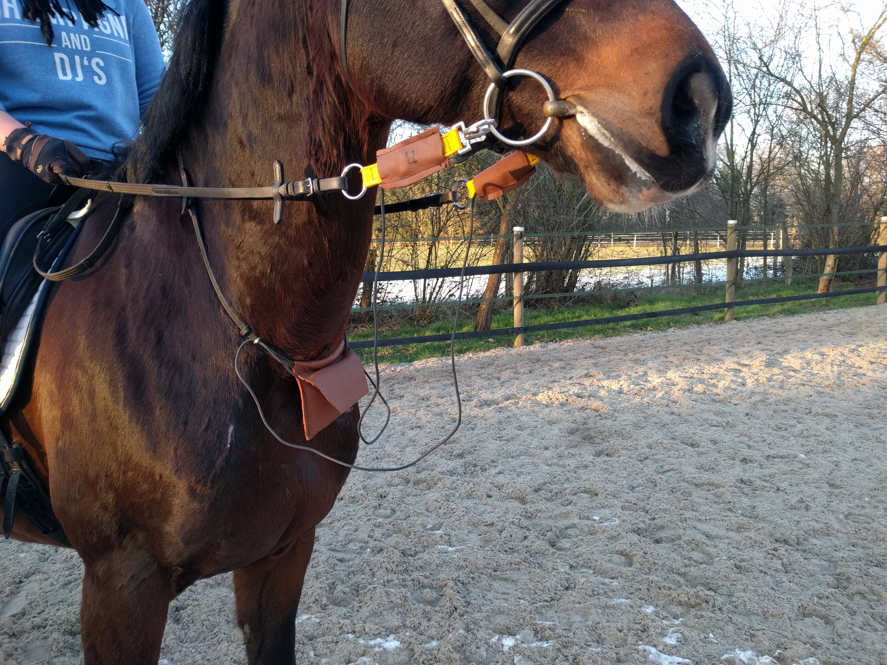
Während des Reitens kann man die Balken prima beobachten und mit den gesehenen Hilfen und Reaktionen des Pferde abgleichen. Es wird klar, dass die App zu den Werten einen Video aufzeichnen muss. Auf jeden Fall macht es Spass zu fachsimpeln, was man da eigentlich sieht.
Die App zeichnet alle Werte und den Messzeitpunkt auf, auf Knopfdruck kann die Aufzeichnung in eine tsv-Datei exportiert und auf den Notebookk gebracht werden. Hier kann sie weiter analysiert werden. Eine übliche Tabellenkalkulation kommt schnell aus dem Tritt, aus 2800 Datenpunkten ein Diagramm zu erzeugen, gnuplot ist da etwas toleranter:
und spuckt auch gleich eine Statistik mit den üblichen Berechungen aus:
| Left | Right | |
|---|---|---|
| FILE: | ||
| Records: | 2816 | 2816 |
| Out of range: | 0 | 0 |
| Invalid: | 0 | 0 |
| Column headers: | 0 | 0 |
| Blank: | 1 | 1 |
| Data Blocks: | 1 | 1 |
| COLUMN: | ||
| Mean: | 1321.9338 | 1988.9884 |
| Std Dev: | 972.3105 | 1543.9554 |
| Sample StdDev: | 972.4832 | 1544.2296 |
| Skewness: | 1.1944 | 1.0376 |
| Kurtosis: | 7.4340 | 4.0549 |
| Avg Dev: | 774.5797 | 1231.1619 |
| Sum: | 3 .72257e+06 | 5.60099e+06 |
| Sum Sq.: | 7 .58320e+09 | 1.78531e+10 |
| Mean Err.: | 18.3227 | 29.0950 |
| Std Dev Err.: | 12.9561 | 20.5733 |
| Skewness Err.: | 0.0462 | 0.0462 |
| Kurtosis Err.: | 0.0923 | 0.0923 |
| Minimum: | 0.3000 [1941] | 0.1000 [ 821] |
| Maximum: | 9661.5000 [1890] | 8953.1000 [2297] |
| Quartile: | 541.2000 | 783.5000 |
| Median: | 1187.5000 | 1665.9000 |
| Quartile: | 1940.8500 | 2879.2000 |
In die Grafik kann man hineinzoomen und sich zB einen Moment anschauen, an dem die Reiterin einen Handwechsel vornahm:
Video
Meine Idee war, dem Reiter die Möglichkeit zu geben, nach dem Ritte seine Zügelhandhabung zu reflektieren. Lediglich die Kurven zu betrachten ist natürlich recht sinnlos, weil man den Moment in dem die Hilfe genutzt wurde nicht mehr korrelieren kann.
Ich will darum mit den Kräften ein Video aufzeichnen und die Kraft-Anzeige direkt in das Video einspielen.
Pieper
Eine Bekannte (Ulrika, danke!), ihres Zeichens Reitlehrerin allerdings fand die Idee, den Ritt nach dem eigentlichen Reiten zu besprechen unrealistisch, weil dafür mit den Reitschülern selten die Zeit ist. Sie hat die Vorstellung, dass direkt beim Ritte zu große Kräfte durch Piepsen angezeigt werden.
Die App kann das leicht tun, also entwickelte ich ein Regelsystem, nachdem die App bestimmt, wann gepiepst werden soll. Es beruht auf einem Punktesystem, dass die Kraft über die Zeit integriert. Kurze hohe Kräfte aber auch lange mittlere Kräfte werden so abgepiepst.
Nachbearbeitung
Zur schnellen Darstellung verwende ich gnuplot. Mit wenigen Befehlen
können die Punkte angezeigt werden:
gnuplot> set autoscale fix
gnuplot> set key left Left
gnuplot> set offset 0,0,.5,.5
gnuplot> set style data line
gnuplot> stats '2018-04-14-14-53-39-44.tsv' index 0 using 5 prefix "L"
gnuplot> stats '2018-04-14-14-53-39-44.tsv' index 0 using 6 prefix "R"
gnuplot> plot '2018-04-14-14-53-39-44.tsv' index 0 using 5 title "Left", '2018-04-14-14-53-39-44.tsv' index 0 using 6 title "Right"
Auch eine Tabellenkalkulation (libreoffice, ...) kann genutzt werden,
solche Programme sind mit der Datenmenge aber schnell überfordert.
Ansonsten ist R order
Root eine gute Möglichkeit mit vielen Daten "zu
spielen".
Mehr Messwerte
Weitere Messwerte zeitgleich zu Erfassen könnte weitere Aufschlüsse geben (vom Puls könnte auf den Stressfaktor des Pferdes geschlossen werden):
- Schenkelkräfte
- Gewichtseinwirkung
- Kraft auf den Nasenriemen
- Puls
Auch könnten (wenn es kein Video gibt) per Knöpfe in der App Werte manuell erfasst werden wie zum Beispiel die Gangart oder andere Ereignisse.
Rückschläge
Löten
Kalte Lötstellen sind das größte Problem: Man sieht sie nicht und sie lauern irgendwo in der Schaltung. Am Ende lötet man alle Stellen erneut und erzeugt dabei schlimmstenfalls eine Neue. Obwohl die Schaltung simpel ist und die Komponenten für Bluetooth und Signalverstärkung auf jeweils einer Platine integriert sind, kommen bei dem Projekt bereits leicht 100 Lötstellen zusammen.
Übergangswiderstände
Es stellt sich heraus, daß die Steckverbindung keine gute Idee es, der Kontakt ist scheinbar nicht gut genug. Die Messung wird durch den Übergangs-Widerstand beeinflusst. Sie mussten entfernt und alles neu gelötet werden.
Einsatz am Pferd
Nach ein paar Einsätzen am Pferd sind die Sensoren defekt. Ein Blick hinter die (Leder-)Kulissen zeigt, dass die Kabel aus der Zugentlastung gerissen sind und beide weissen Kabel getrennt sind.
Verweise
Zack!
Eine einmalige Messhilfe bietet Swingtree:
Die Messtreifen sind allerdings zerstört, wenn die Kraft einmalig überschritten wurde und kostet pro Messung somit ca 60¢.
Pferdeheilkunde 22 (2006)
Folgenden Artikel fand ich zum Thema: Der Einfluss von Zügel und Gebiss....
Patent (2008)
Die naheliegende Idee, Zügelkräfte zu messen, die Daten per Funk zu Übertragen und auch weitere Messwerte einzubeziehen liess sich am 31. März 2010 bereits Heinz Gross unter DE202010000515U1 patentieren. Anmeldender Anwalt war damals Jochen Hansen von Kanzlei HQuadrat. Eine Nähe zu meiner Idee ist Ausgeschlossen, da die Messung explizit mit Dehnungsmessstreifen zur Gewichtsoptimierung umgesetzt wird. Ich setze aber auf Biegesensoren zur Kostenoptimimierung. Mit meiner Veröffentlichung ist nun übrigens mein Idee nicht mehr patentierbar.
Cavallo (2015)
Auch die Zeitschrift Cavallo nutzt in einem Bericht eine ähnliche Apparatur: Zügel-Messung mit drei Pferden vom 15. Februar 2015. Auch hier werden aber Biegesensoren eingesetzt. Darin erwähnen sie eine Zügelmessung die 10 Jahre vorher stattgefunden hat, also weit vor dem Patenteintrag - sollten also die Messsensoren als äquivalent angesehen werden, war aus diesem Grunde schon die Idee nicht mehr patentierbar.
Horsica (2017)
Auf der Horsica gab es einen Stand, an dem Kraftmessungen am Zügel allerdings analog und am statischen Objekt vorgenommen wurden. Leider habe ich keinen konkreten Kontakt.
Bachelor (2017)
Eine Studentin aus Bremen sucht für ihre Forschung Reiter, auch sie will Zügelkräfte messen.
Urheber
Michael Dietrich setzt diese Idee um, dieser Blogeintrag wurde am 10. Dezember 2017 begonnen, die Idee und Arbeiten an dem Projekt bereits im Dezember 2015.

{kind=link}
{kind=link}
{kind=link}
{kind=link}
{kind=link}
{kind=link}